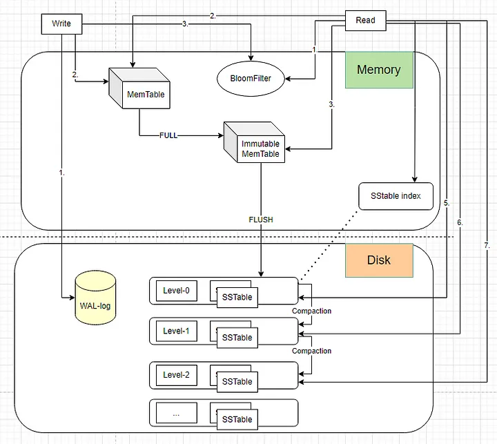

Storage Engines
The storage engine (or database engine) is a software component of a database management system responsible for storing, retrieving, and managing data in memory and on disk, designed to capture a persistent, long-term memory of each node.
Storage engines such as BerkeleyDB, LevelDB and its descendant RocksDB, LMDB and its descendant libmdbx, Sophia, HaloDB,
Row-Oriented Data Layout

Row-oriented database management systems store data in records or rows. Their layout is quite close to the tabular data representation, where every row has the same set of fields.
row-oriented stores are most useful in scenarios when we have to access data by row, storing entire rows together
Because data on a persistent medium such as a disk is typically accessed block-wise a single block will contain data for all columns. This is great for cases when we’d like to access an entire user record, but makes queries accessing individual fields of multiple user records
Column-Oriented Data Layout
Column-oriented database management systems partition data vertically.Here, values for the same column are stored contiguously on disk
Column-oriented stores are a good fit for analytical workloads that compute aggregates, such as finding trends, computing average values, etc. Processing complex aggregates can be used in cases when logical records have multiple field
Assume the table have id ,data and price which will be stored as below so if you want to calculate the total price it will be single disk read IO.
Symbol: 1:DOW; 2:DOW; 3:S&P; 4:S&P
Date:1:08 Aug 2018; 2:09 Aug 2018; 3:08 Aug 2018; 4:09 Aug 2018
Price: 1:24,314.65; 2:24,136.16; 3:2,414.45; 4:2,232.32
Indexing
An index is a structure that organizes data records on disk in a way that facilitates efficient retrieval operations.
There are 2 index type
- Primary index : index created by the database itself using primary key
- Secondary indexes : Created by the user based on need
Secondary indexes
Mostly Secondary indexes will hold the primary key index reference and primary index will hold the address for the data in memory the advantage of using this method is if update/delete is easy because updating primary index location is fine but it need 2 lookup when we searching.
The way the index stored is classified in 2 types
- clustered index : Where the physical order of the rows in the table corresponds to the order of the index’s keys. let assume you have username filed as primary index then the data stored in data file be sorted based on username.
- non clustered index: does not maintain the order of primary index
Hard Disk Drives
On spinning disks, seeks increase costs of random reads because they require disk rotation and mechanical head movements to position the read/write head to the desired location. However, once the expensive part is done, reading or writing contiguous bytes (i.e., sequential operations) is relatively cheap.
The smallest transfer unit of a spinning drive is a sector, so when some operation is performed, at least an entire sector can be read or written. Sector sizes typically range from 512 bytes to 4 Kb
Solid State Drives
SSD is built of memory cells, connected into strings (typically 32 to 64 cells per string), strings are combined into arrays,arrays are combined into pages, and pages are combined into blocks .Blocks typically contain 64 to 512 pages.
The smallest unit that can be written or read is a page.
B-Tree vs B+ Tree
B-Trees allow storing values on any level: in root, internal, and leaf nodes.
B+ Trees store values only in leaf nodes all operations (inserting,updating, removing, and retrieving data records) affect only leaf nodes and propagate to higher levels only during splits and merges.
LSM tree
The Core Idea of LSM Trees
“Never update in place. Always append new data sequentially and merge later.”
That’s the essence of the Log-Structured Merge Tree (LSM Tree).
It transforms many small random writes into large sequential writes, which disks handle extremely efficiently.
So instead of rewriting records, we just keep adding new versions, and periodically merge & compact them.
An LSM-based database is typically made of three main layers:
| Layer | Description | Analogy |
|---|---|---|
| 1. Write-Ahead Log (WAL) | Sequential log on disk; ensures durability. | ”Safety notebook” records what we intend to write in case of crash. |
| 2. MemTable (in-memory) | In-memory balanced tree (usually a skiplist or red-black tree) holding the most recent writes. | ”Work-in-progress table” — new writes go here first. |
| 3. SSTables (Sorted String Tables) | Immutable, sorted files on disk created when MemTable is full. | ”Archived notebooks” —compacted, sorted, read-only data files. |

let say we inserting key-value pairs into a key-value store:
Put("user:1", "Alice")
Put("user:2", "Bob")
Put("user:1", "Alice Updated")
Step 1 — Write-Ahead Log (WAL)
Each write is first appended to the WAL file on disk.
WAL:
[user:1 → Alice]
[user:2 → Bob]
[user:1 → Alice Updated]
This ensures durability — if the system crashes, we can replay this log to recover.
WAL = “durability first, correctness later”.
Step 2 Insert into MemTable (in-memory)
Next, the same key-value is inserted into the MemTable (an in-memory sorted structure).
At this point, it looks like:
MemTable (sorted by key):
user:1 → Alice Updated
user:2 → Bob
Notice that “Alice” got replaced by “Alice Updated” MemTable holds only the latest value for each key in memory.
NOTE: In-memory balanced tree (usually a skiplist or red-black tree) holding the most recent writes.
Step 3 Flushing MemTable to Disk
When the MemTable becomes full (e.g., reaches 64MB), it’s:
- Frozen (turned read-only)
- Flushed to disk as an SSTable file
So now you have:
SSTable_1:
user:1 → Alice Updated
user:2 → Bob
And a new, empty MemTable starts accepting writes.
5. What Is Inside an SSTable?
An SSTable (Sorted String Table) is an immutable, sorted, on-disk file containing key–value pairs.
Each SSTable contains:
- Data blocks: actual key–value entries (sorted by key)
- Index block: maps keys to offsets in the file
- Bloom filter: probabilistic structure to check if a key might exist
- Footer: metadata about offsets and index locations
Example: SSTable contents
SSTable_1
------------------------------------
| Key | Value | Offset |
------------------------------------
| user:1 | Alice Updated | 0x0000 |
| user:2 | Bob | 0x0030 |
------------------------------------
Index:
user:1 → offset 0x0000
user:2 → offset 0x0030
Bloom filter:
[user:1, user:2] → quick existence check
Because the SSTable is sorted, range queries (user:1 to user:1000) are very efficient.
6. Multiple SSTables and Compaction
As writes continue, new MemTables are flushed as new SSTables.
Example over time:
SSTable_1:
user:1 → Alice Updated
user:2 → Bob
SSTable_2:
user:3 → Charlie
user:1 → Alice Final
Now, there are two versions of user:1 — one in each SSTable.
Compaction
A background thread periodically merges and re-sorts SSTables, removing outdated or deleted entries.
After compaction:
Merged SSTable:
user:1 → Alice Final
user:2 → Bob
user:3 → Charlie
This keeps read performance predictable and reduces storage overhead.
7. The Read Path Step by Step
When you do Get("user:1"), here’s what happens:
- Check MemTable: if present, return immediately.
- Check immutable MemTables: any pending flushes in memory.
- Check SSTables on disk: from newest to oldest.
- Use Bloom filters to skip SSTables that definitely don’t contain the key.
- Use the SSTable’s index to locate the block quickly.
- Return the latest version of the key.NOTE
This multi-tier lookup is efficient because:
- Most reads hit the MemTable (hot data)
- Bloom filters eliminate most unnecessary disk reads
| Database | LSM-based? | Notes |
|---|---|---|
| LevelDB | Yes | Google’s original LSM implementation |
| RocksDB | Yes | Facebook’s optimized LSM engine |
| Cassandra | Yes | LSM core with distributed layer |
| HBase / Bigtable | Yes | HDFS-based LSM store |
| ScyllaDB | Yes | C++ reimplementation of Cassandra |
| SQLite (WAL mode) | Partially | Append-only journaling pattern |
OLTP (Online Transaction Processing) Databases
- OLTP databases are designed for handling transactional workloads, which involve a high volume of short, simple transactions.
- These transactions typically involve frequent insert, update, and delete operations on individual records or small sets of records.
- OLTP databases prioritize fast response times, concurrency, and data integrity, making them suitable for applications such as e-commerce, banking, and order processing systems.
- Examples of OLTP databases include MySQL, PostgreSQL, Oracle Database, and Microsoft SQL Server.
OLAP (Online Analytical Processing) Databases
- OLAP databases are optimized for performing complex queries and analysis on large volumes of historical data.
- These databases are designed to support decision-making processes by providing capabilities for data aggregation, slicing, dicing, and drilling down into data to uncover insights and trends.
- OLAP databases typically store data in a denormalized format, optimizing them for analytical queries rather than transactional operations.
- OLAP databases are commonly used in business intelligence (BI), data warehousing, and reporting applications.
- Examples of OLAP databases include Amazon Redshift, Google BigQuery, Snowflake, Apache Hive, and Apache Spark.
Resources
- Discover and learn about 960 database management systems
- Knowledge Base of Relational and NoSQL Database Management Systems
Indepth
- https://medium.com/@hnasr/following-a-database-read-to-the-metal-a187541333c2
- https://medium.com/@hnasr/database-pages-a-deep-dive-38cdb2c79eb5
ACID
1. Atomicity “All or Nothing”
When a transaction involves multiple low-level operations (e.g., insert, update, delete), they must all complete successfully as a single indivisible unit.
Mechanism:
- Databases use write-ahead logs or undo logs.
- Before applying changes, they record what will be changed.
- If a crash or error occurs mid-transaction, the system reverts (rolls back) to the pre-transaction state.
Without atomicity:
Partial updates could occur e.g., money debited from one account but not credited to another.
Mental model:
Think of atomicity as a “transaction shield” either the entire shield holds, or nothing goes through.
2. Consistency “Valid State to Valid State”
Every transaction must preserve the logical rules of the database not just finish successfully.
Mechanism:
- Integrity constraints (e.g., foreign keys, unique constraints).
- Application rules (e.g., total balance must remain constant).
- Trigger checks and validation logic.
Without consistency:
You could end up with impossible or contradictory states — e.g., negative inventory, orphaned foreign keys.
After a committed transaction, the database must obey all declared rules.
Those rules are:
- NOT NULL
- UNIQUE
- FOREIGN KEY
- CHECK constraints
- Triggers
- Application-defined invariants
Mental model:
Consistency is the “laws of physics” for your data — transactions can act freely, but must respect these laws before committing.
3. Isolation “Transactions Don’t Interfere”
When many transactions happen simultaneously, they should appear to run one after another, even if internally they overlap.
Mechanism:
- Locking (two-phase locking, read/write locks)
- Multiversion concurrency control (MVCC)
- Serializable scheduling
Goal:
Ensure one transaction doesn’t see uncommitted results of another.
Without isolation:
- Dirty reads: Reading uncommitted changes.
- Non-repeatable reads: Seeing data change mid-transaction.
- Phantom reads: Seeing new rows appear unexpectedly.
Mental model:
Each transaction works in its own “time bubble.” Only when it commits do its effects become visible to others.
4. Durability “Once Committed, Forever Safe”
After a transaction commits, its effects must survive power loss, crashes, or restarts.
Mechanism:
- Write-ahead logging ensures the commit record is flushed to non-volatile storage (disk, SSD, etc.) before acknowledging success.
- Upon recovery, the system replays the log to restore the last consistent state.
Without durability:
You might lose committed data after a crash — breaking trust in the database’s reliability.
Mental model:
Durability is like engraving changes in stone — once carved (committed), they persist through any crash or reboot.
Example: Bank Transfer in PostgreSQL
Transfer ₹100 from Alice to Bob.
BEGIN;
UPDATE accounts SET balance = balance - 100 WHERE name = 'Alice';
UPDATE accounts SET balance = balance + 100 WHERE name = 'Bob';
COMMIT;| Property | How SQL Enforces It | Mechanism | Result in Example |
|---|---|---|---|
| Atomicity | The whole transaction is treated as one unit. If any update fails, both are rolled back. | Write-Ahead Log (WAL) + rollback segments | Either both balances change or neither does. |
| Consistency | Schema constraints, triggers, and foreign keys ensure valid data. | Constraints checked before commit | No invalid balance or broken foreign key. |
| Isolation | Concurrent transactions use locks or MVCC so they don’t interfere. | Isolation levels (READ COMMITTED, SERIALIZABLE, etc.) | No other user can see half-completed transfer. |
| Durability | After COMMIT, data is flushed to disk. | WAL flushed to persistent storage | Even after crash, committed changes persist. |
NoSQL Databases — Selective or Relaxed ACID
NoSQL systems (MongoDB, Cassandra, DynamoDB, CouchDB, etc.) were built to handle massive distributed data often across many machines, regions, or datacenters.
In such systems, guaranteeing full ACID globally is expensive and slow. So they often follow BASE principles (Basically Available, Soft state, Eventual consistency) instead trading some strictness for performance and scalability.
Updating a user’s order count and order list atomically.
db.users.updateOne(
{ _id: "123" },
{
$inc: { orderCount: 1 },
$push: { orders: { id: "A1001", total: 200 } }
}
);Before MongoDB 4.0:
- Transactions were atomic only at the single-document level.
- If you modified multiple documents (or collections), only partial updates might persist if a crash occurred.
After MongoDB 4.0:
- Added multi-document transactions — now supports full ACID (like SQL) within a replica set.
| Property | MongoDB’s Behavior |
|---|---|
| Atomicity | Guaranteed per document; multi-document atomicity since 4.0 |
| Consistency | Schema validation + replica sync ensures consistency (optional schemas) |
| Isolation | Document-level isolation; within transactions, snapshot isolation |
| Durability | Journaling ensures durability (data written to journal before commit) |
MongoDB can now be fully ACID within a transaction scope, but large-scale distributed deployments may still favor performance by relaxing isolation or durability slightly.
const session = client.startSession();
session.startTransaction();
try {
const event = await events.findOne({ _id: id }, { session });
if (event.availableSeats <= 0) throw new Error("no seats");
await events.updateOne(
{ _id: id },
{ $inc: { availableSeats: -1 } },
{ session }
);
await bookings.insertOne(
{ eventId: id, userId: uid },
{ session }
);
await session.commitTransaction();
} catch (e) {
await session.abortTransaction();
}
- Atomicity: You decrement seats AND create a booking OR neither.
- MongoDB stores writes in the oplog but doesn’t make them visible until commit.
- If commit succeeds → both writes become visible.
- If crash happens mid-update → none of the changes apply.
-
Consistency: Constraints (e.g., unique booking) always enforced.
- Isolation: Two people trying at same time won’t oversell seats.
- Two users trying to decrement “availableSeats: 1” it will do one by one
- Durability: After commit, the booking survives failovers.
BASE
BASE = Basically Available, Soft state, Eventual consistency
1. Basically Available
Focus on availability over strict correctness.
If a part of the database is down:
- still accept writes
- still allow reads
- return something, even if slightly outdated This is how:
- Amazon Dynamo
- Cassandra
- Riak
behave. They prefer “always respond” over “always correct right now”.
2. Soft State
The system’s state may change even without new writes, because:
- background processes repair data
- replicas sync with each other
- conflict resolution merges versions
This is NOT the case in ACID systems — those are “hard state”.
In BASE, the database is constantly settling, like ripples on water.
3. Eventual Consistency
The system guarantees:
If no new writes happen, eventually all replicas converge to the same state.
This is the heart of BASE.
It’s a promise about the future, not the present.
You update a user profile in India cluster.
For a short time:
- US node has old data
- Canada node has conflict
- Germany node has new data
After replication eventually:
- all nodes converge to the new state
How? Through gossip protocols, vector clocks, last-write-wins, or CRDTs.
CAP theorm

The CAP theorem states that a distributed system cannot simultaneously guarantee Consistency, Availability, and Partition Tolerance When a network partition occurs, a system must compromise on either consistency or availability to continue operating
The Components of CAP
-
Consistency (C): Every client reading the data sees the same, most recent, successful write, regardless of which node they connect to. To ensure consistency during an update, all nodes must be in sync before a write operation is considered complete.
-
Availability (A): Every non-failing node in the system must remain operational and return a response for every request in a reasonable amount of time. The response is guaranteed, but there is no guarantee that the data is the most recent version in the event of a partition.
-
Partition Tolerance (P): The system continues to function despite network failures that result in communication breakdowns (partitions) between nodes. Network partitions are an inevitable reality in real-world distributed systems, so partition tolerance is generally considered a prerequisite.
-
Consistency (C) –
Every node sees the same data at the same time.
If you read after a write, you’ll always get the latest value — no stale data. -
Availability (A) –
Every request gets a response — even if some nodes are down.
The system never refuses to respond, though the response might not be the latest. -
Partition Tolerance (P) –
The system continues to operate even if communication between nodes breaks (a network partition).
CAP-Consistency ≠ ACID Consistency
When you hear “consistency”, you might think of the C in ACID - ensuring transactions move the database from one valid state to another.
CAP-consistency means linearizability.
“If operation B started after operation A successfully completed, then operation B must see the the system in the same state as it was on completion of operation A, or a newer state.”
Every read should return the most recent write. CAP-consistency is about the order of operations, not about transaction validity.
The theorem states:
In the presence of a network partition, a distributed system can provide either consistency or availability, but not both.
| Type | CAP Priority | How it Works | Ideal Use Case | Example Databases |
|---|---|---|---|---|
| CP (Consistency + Partition Tolerance) | Prioritizes data accuracy over availability. | During a network partition, the system will refuse requests until it can synchronize nodes again — ensuring that any data you read is always up-to-date and correct. | Financial systems, banking, or inventory where incorrect data can cause serious errors. | MongoDB, HBase, Redis (in cluster mode) |
| AP (Availability + Partition Tolerance) | Prioritizes uptime over perfect consistency. | During a partition, the system continues responding, even if some nodes have stale data. Later, it reconciles conflicts (eventual consistency). | Social media feeds, product listings, or user activity logs where stale data is acceptable but downtime isn’t. | Cassandra, DynamoDB, CouchDB |
| CA (Consistency + Availability) | Works only when there’s no partition — typically in a single-node or tightly coupled system. | Provides strong consistency and full availability as long as the system isn’t distributed or doesn’t face network splits. | Traditional monolithic systems or single-server applications. | Single-node PostgreSQL, MySQL |
MongoDB is fundamentally a CP system but can be tuned to behave more AP-like depending on:
- readPreference
- writeConcern
- failover election window
- replication settings
MongoDB default behavior is CP.
Meaning:
- If a partition isolates the primary
- AND no majority is available
- MongoDB stops accepting writes to preserve consistency
Replica set:
Node1 (Primary) Node2 (Secondary) Node3 (Secondary)
Network partition splits:
Node1 (isolated) Node2 + Node3 (majority side)
On Node1:
- still “thinks” it’s primary for ~10 seconds
- then steps down automatically
- REJECTS all writes with an error:
NotWritablePrimary
MongoDB sacrifices availability to maintain consistency.
On Node2 + Node3:
- elect a new primary
- continue accepting writes
This is CP behavior.
MongoDB can behave AP if you choose:
- readPreference: “primaryPreferred”
- writeConcern: 1
This allows reads/writes to continue even on minority or stale nodes.
To overcoming the CAP theorem in building data systems. It proposes a solution that involves using immutable data, rejecting incremental updates, and recomputing queries from scratch each time. This approach eliminates the complexities associated with eventual consistency.
The key properties of the proposed system include: 1. Easy storage and scaling of an immutable, constantly growing dataset. 2. Primary write operation involving adding new immutable facts of data. 3. Recomputation of queries from raw data, avoiding the CAP theorem complexities. 4. Use of incremental algorithms to lower query latency to an acceptable level.
The workflow involves storing data in flat files on HDFS, adding new data by appending files, and precomputing queries using MapReduce. The results are indexed for quick access by applications using databases like ElephantDB and Voldemort, which specialize in exporting key/value data from Hadoop for fast querying. These databases support batch writes and random reads, avoiding the complexities associated with random writes, leading to simplicity and robustness.
Global secondar index Used in distributed shared database where the indexing is in global so when ever request go to the DB proxy that is infront of sharded DB it will do the query on GSI to get the doc shard database ref such that we don’t want to query on all shard.**
Resources
- https://medium.com/@hnasr/following-a-database-read-to-the-metal-a187541333c2
- Build your own Database Index: part 1
- Database Fundamentals
- https://www.geeknarrator.com/blog/social-posts/ten-things-about-your-database
- Advanced Database Systems 2024
- https://planetscale.com/blog/btrees-and-database-indexes
- https://planetscale.com/blog/io-devices-and-latency
SQL
CLient → Query enging (thread/process per client) → storage/engine (io/treads) → Disk
they have thread and locks and shared memory for communication
Cassandra client → MainThread pool(threads per client) →MMapedFile (kernel task) - > Storage
Locks moved to kernel